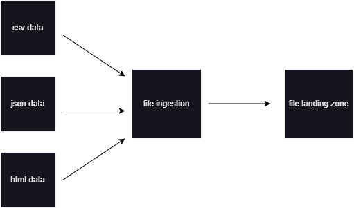
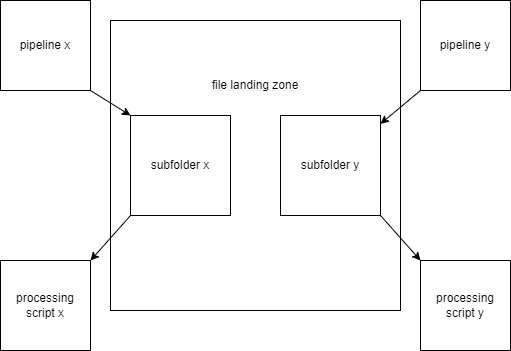
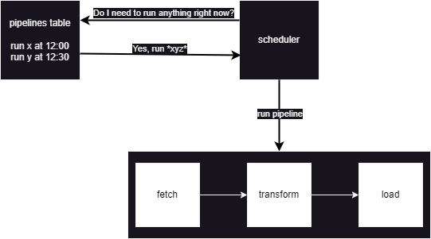
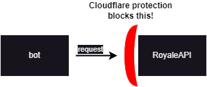
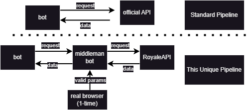

Jambot has been a solo personal project of mine for about the last 5 years now, where my main focus has been to extrapolate data from Clash Royale games and turn it into both a data engineering and data analytics platform for me and my friends to use. It has very much evolved over the years (I started this in high school, yikes) and has turned into something much more worthy of talking about.
Back in high school (and into college), I was really good at a mobile PvP game called Clash Royale. For those unfamiliar, Clash Royale is a 1 vs 1 game where you pick a deck of 8 cards and battle against another player in real time. Each player has 2 "princess towers" and 1 "king tower", and the objective is defeat the other players towers while defending your own towers. Each game is confined to 3 minutes of regular play, and 2 minutes of overtime, where whoever destroys the next tower wins. The unfortunate truth to this game is that it is heavily dependent on a factor of luck, which is what cards you are using versus your opponent. I won't go into too much of a rabbit hole, but if you continuously play the same 8 cards, you will learn that various cards your opponents play will cause for easy wins and other cards will cause for very difficult matchups.
When I was in high school and starting to dive into computers, I learned that Clash Royale had a public API available where I could gather data and statistically analyze my gameplay. Unfortunately the public information is not as precise as I would like, but it has data regarding what cards I played versus what cards my opponent played, and that is where I started. It started extremely simple and ugly: within a python file, I had my specific profile hard-coded in, then fetch and download all information regarding my battles from the API and just append it to a CSV file. It was ugly, but I was 17 and it worked: my first data engineering project had taken hold.
A popular social media platform for gamers is Discord. Luckily for me, Discord is extremely supportive in the concept of creating Bots, and that was the next step for me. Rather than manually running a Python file every day, I would set up this bot to automatically run this script at the end of the day, saving me the hassle of doing so. Not only that, but Discord has support for "commands", where I can write functionality to return data that I wanted. And so, that was another step along the way. I was writing commands to pull data out of the CSV file to look at my statistics, and people that I was chatting with took notice. People were asking if they could be "added to the list" of players where I was fetching data, and the project had seriously taken root. At this point, I was in university studying computer science, and I put that knowledge to use. It became a full-fledged personal project, where I was fetching data for up to 60 people.
Eventually, after many years of continuously adding people and features to this project, it became too messy to maintain. At the peak of the mess, I had a single python file with almost 8,000 lines of spaghetti code that I was either adding to, or debugging issues with. At this point I had spent roughly 5 years, very casually obviously, developing this and continously adding to the mess rather than fixing it, and I had decided that enough was enough, and had to rebuild the bot from the ground up with better methodology.
First things first, I absolutely needed to modularize the pieces. A single file with thousands of lines of code was a nightmare to debug, and when I was designing the architecture for 2.0 (Jambot) it was a major driving factor. Another key design philosophy I went with when revamping was a separation of duties approach where I would actually have 2 distinct bots running. One bot would be doing all data work (ETL), and another bot would be a front-end user-friendly bot. This solved another problem I was having at the time which is when the old bot was busy fetching data, it would not be able to respond to commands, causing downtime where it was unavailable. Eventually, I was doing so much ETL that the bot was down for roughly 25 minutes out of every hour, over 40% downtime. Even in a personal project, that was unacceptable and the idea to employ two separate bots to solve this issue worked like a charm.
In the spirit of modularization, I wanted every process to follow the same logical steps, where each file along the way would take care of a specific step. Starting at the bottom, I wanted a unified ingestion layer. I have two files containing fetch information. One file is a definition for how I want to fetch from each source (handling CSV vs JSON vs HTML), and another file contains the source specific logic. When the data is fetched, I wanted to download raw files rather than working with data in memory, and so all files are sent to a landing zone with applicable subfolders for each process.

Now that I have all the files I want contained within a landing zone, I need to actually process them and get them into our environment. This is the core part of the pipeline, as I will perform both transformation and loading in the same step. Transformation can be broken down as well, but basically this is where I will change the data to appear how I want. Once that is complete, the "load" step is next where I are putting the data into our final database. There are processing scripts unique to each respective pipeline, that will dig through their respective subfolders in search of any files to process, then will run the processing steps as needed.

But, how is all of this orchestrated? The steps along the way are great, but they need to be ran in the correct order at the correct times. In my SQL database, I have a pipelines table that is manually maintained. This table contains information such as pipeline name, time of hour, and days of week it should be ran. It also has metadata such as the next planned run and the previous run, and average runtimes. In a separate python file, I have a file that condensed all the functionality into an easily callable function, which essentially acts as the pipeline. Within this specific file I have 11 pipelines, all of which follow the same structure and process, modified to their specific information. There is a dictionary map where I map the name of the function calling all the steps in the pipeline to the name of the pipeline itself, which is what I need to match to my SQL table. Then, similarly to the previous iteration of this bot, there is a master python file that continuously runs and will continuosly ping my pipelines SQL table. If it finds a matches the current time to a time found in the pipelines table, the pipeline will be trigged and via the loader function, will be orchestrated correctly.

However, one of these pipelines is not like the other. I mentioned earlier here that when I originally started pulling this data, it was not as detailed as I would have hoped. To be more specific, I was hoping to get my hands on replay data, which would display which cards were placed, what time in the game they were placed, and at what position they were placed. My hope for this was to eventually develop some sort of engine (similar to chess) where I could come up with a solution to help me win more games. Something like "Playing card X at 1:20 was a bad play, you should have done Y". Obviously that would take a ton of work and it might not be that specific, but for years I was unable to even obtain this sort of information as it was only available to RoyaleAPI which was an official partner of Supercell, the parent company of the game. So, I did some digging, and found a workaround.
RoyaleAPI displays all replay data from battles publicly, although you need to be logged into an account to view this data, which keeps it behind an authentication wall from public scraping. To scrape this data, you need to pass both an authentication key and a session cookie (which are unique every time you use this page on a browser). But, if you are logged into an account and continously keep a session open, you can infinitely re-use your session's authentication token and cookie which allows me to scrape the data. And so the solution was to develop my own API to continously hold this session in order to grab this data.

There is a third bot hidden that acts as a middleman between RoyaleAPI and my own Jambot, as it has the authentication that Jambot wants to get this data.
If I log into RoyaleAPI through a valid browser, I can look at Chrome devtools and copy down our session and authentication cookies, as they are automatically
generated and given to us via Cloudflare validating I are a human user and not a bot trying to scrape. Once I have these headers, I just pass them into
this third bot that has an active instance of RoyaleAPI open to act as a middleman, and I'm in. So,
to get the data, Jambot will send a request to the middleman bot, such as "get me the replay data for game #ABC123". The middleman bot will get
this request, and then go the RoyaleAPI page for that specific game tag, and scrape the HTML for all data points. Once all the information is scraped, it is
formatted in JSON then displayed to an output for Jambot to read, which at that point can be ETL'd into my database as a normal process. If you're
more technically savvy, you can see this API in line 485 of ingest/calls.py.
But, why is an entire third bot actually needed? Theoretically, couldn't I just pass these valid session headers into the bot I currently have?
Unfortunately, no, because these authentication headers are temporary, and any time the current instance is killed I would need to manually
upload valid headers again. I don't want to do that and keep it as automated as possible, so this third bot is utilized only for the sole purpose of
keeping a constant session open in connection to RoyaleAPI. By continously keeping this session open, our authentication to RoyaleAPI will never expire
and I will always have a "back-door" access point to this data.

All in all, this replays pipeline has been by far my biggest challenge both technically and on the data side. Scraping raw HTML from an "unauthorized" source has it's own challenges in data quality, but there are various tactics in place to try to ensure the best it can be. Additionally, the volume of data is much larger than any other pipeline I am maintaining. For any given run of my battles pipeline, I can expect there to be about 100-200 records inserted. However, that battles table is just face value data such as what cards each side played, who won/lost, etc. Every single one of those battles will have anywhere from 40-70 cards being placed on each side, so my Replays table with card placement data is roughly 50x larger than my battles table. Unfortunately, I can't backfill this data from years of collecting battles, but my Replays table superceded my Battles table after about a month of running, even after 5+ years of continously building my Battles table.
So, did I get better at the game? That was the whole point, wasn't it? Well, yes I did. I got noticeably better at the game, but not all of it came from looking at statistics and numbers. A lot of it was practice and trying new things, which is what I did here with this bot. Continously trying new things, looking at workarounds, and exploring options allowed me to build up this bot from a fun little personal project into an end-to-end system where I am supporting statistics for 100+ players. I have had a ton of fun working on this and I'm excited to see where it will continue to go!